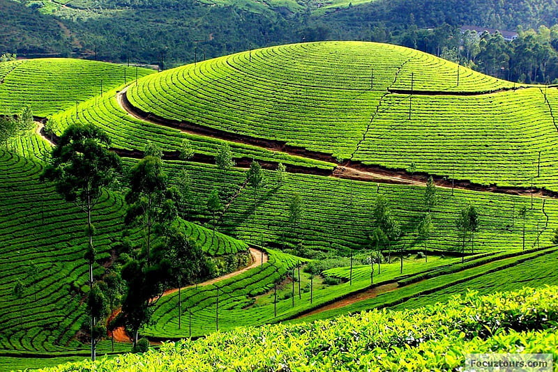

OOTY
Ooty, officially known as Ootacamund, is a charming hill station nestled in the Nilgiri Hills of Tamil Nadu, India. Situated at an altitude of approximately 2,240 meters (7,350 feet) above sea level, Ooty is celebrated for its salubrious climate, verdant landscapes, and serene ambiance, earning it the moniker "Queen of Hill Stations." The town is renowned for its sprawling tea plantations that carpet the surrounding hills, offering picturesque vistas of lush greenery and rolling hillsides. Visitors to Ooty can immerse themselves in the scenic beauty by taking leisurely walks through the tea estates, where they can witness the process of tea cultivation and even indulge in tea-tasting sessions.

Places near by:
1.Nilgiri Mountain Railway :
Nilgiri Mountain Railway, also known as Toy Train in Ooty, is one of the key attractions of the popular hill station Ooty. Such is the train's popularity and history that it was declared as a World Heritage Site by UNESCO in 2005. Started in the year 1899, it has continued to charm its visitors over the past many years winding its way through the best of nature. The Toy Train covers a distance of total 46 km in a span of 5 hours and takes one through a truly spectacular journey filled with picturesque views en route. Another fascinating feature of the train is that its youngest X-class locomotive is over 50 years old and the oldest is 80 years old.
2.Emerald Lake, Ooty :
Emerald Lake is situated in Emerald Village, around 20-22 kilometres from the main city of Ooty and is a part of the Silent Valley National Park in the Nilgiris District. Serene and away from the maddening crowd, the lake and its surroundings are much cleaner and offer a perfect place to enjoy a leisurely time in the vicinity of nature and quietude. It is one of the unexplored and virgin places of the South Indian hill station, not yet encroached by the masses of tourists that visit the place every year. Emerald Lake is the ideal spot in Ooty for nature lovers.
3.Dolphin's Nose, Ooty Overview :
Located about 12 km away from Coonoor is the Dolphin's Nose about 1,500 meters above sea level. The tip of the peak of this enormous rock resembles a dolphin's nose and this is one of the most visited tourist spots in The Nilgiris District of Tamil Nadu. It is set amidst the rolling hills of the Nilgiris Hills (or the Blue Mountains). The gigantic rock formation is entirely unprecedented. There are enormous canyons found on both the sides of the destination and there is a clear view of the Catherine Falls, another popular tourist destination with its ongoing current several thousand meters below, which is located at a short distance from the Dolphin's Nose